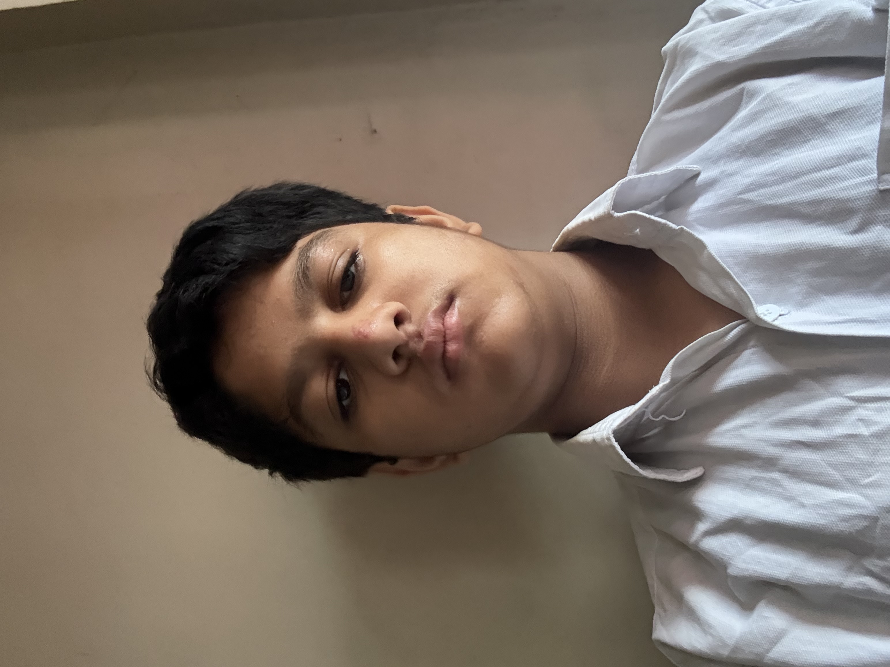
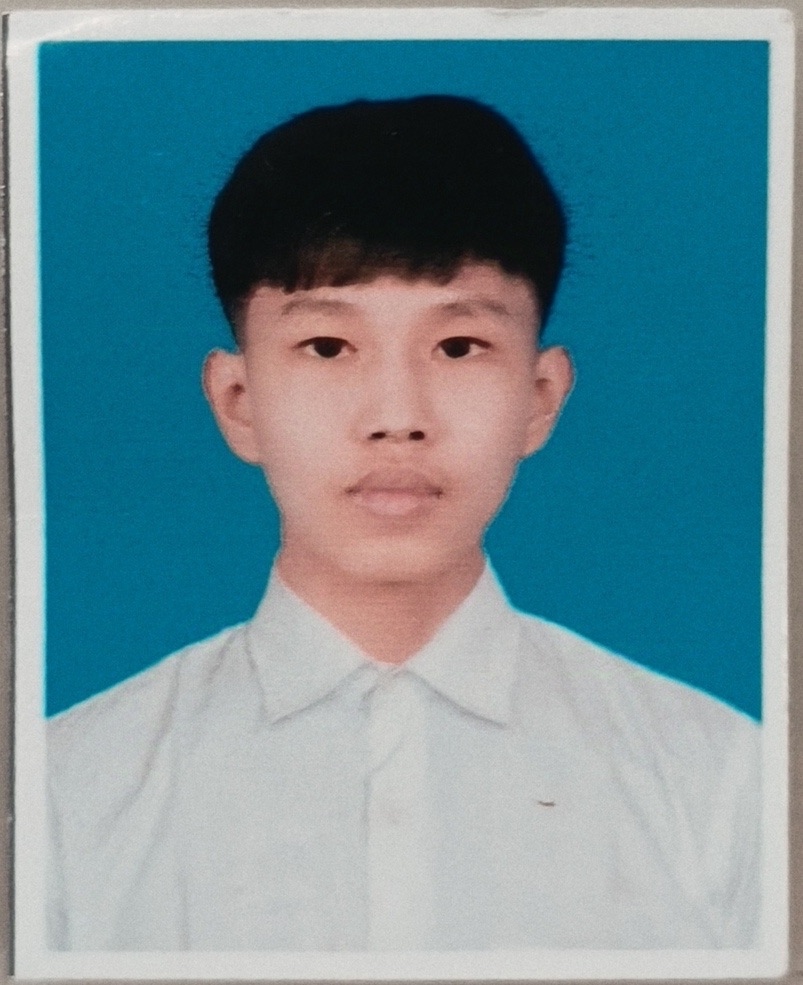

We created EcoStep to raise awareness about carbon footprint, pollution, and sustainable living. Many people are unaware of how daily activities such as transportation, electricity use, and waste production affect the environment. We will encourage our school and community to practice simple eco-friendly habits that can help reduce pollution and support smarter, greener future cities. By combining research, web design, and ICT skills, our team hopes to inspire others to take small steps toward creating a more sustainable future for everyone.
Prostatsolargroup https://www.prostatgroup.com/blog/what-are-the-benefits-of-solar-panels-on-your-home/
Techxplore https://techxplore.com/news/2025-04-ai-powered-air-pollution-sensors.html
Trafficinfratech https://trafficinfratech.com/planning-improving-travel-safety-with-ai-powered-traffic-management/
Jejakin https://www.jejakin.com/en/blog/ways-to-reduce-carbon-emissions
ESYGO https://esygo.in/the-future-of-green-transportation-ev-charging-stations/